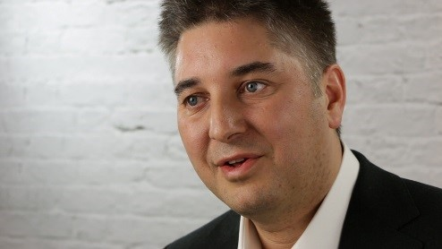

Preliminary Program
| 10:30 | TBA | Opening |
|---|---|---|
| 10:40 | Baozhu Ning Semtech |
Invited Talk Latest LoRa Edge LR1110 Asset Management Platform |
| 11:20 | Bruno Johnson CASCODA & Thread |
Invited Talk OCF-over-Thread: Overcoming the 5 Key Requirements for IoT |
| 12:00 | TBA | Panel Discussion |
Invited Talk

OCF-over-Thread: Overcoming the 5 Key Requirements for IoT
Bruno Johnson, CASCODA, Southampton, UK
Abstract
TBA
Short bio
Bruno is an expert in the conceptualization, design, development and strategic implementation of standard products for the electronics industry. His experience covers a range of wireless devices, gained through previous positions in Semtech’s Wireless and Sensing business unit, Acapella’s Fibre Communications division and Hitachi Microsystems (now Renesas). Since forming Cascoda, Bruno has been responsible for defining and implementing the company vision, strategy and communications. Bruno is currently Vice-Chair of the Marketing & Communications Work Group of OCF and Chair of the Regional work group of the Thread Group. Bruno holds an MSc in Mircoelectronics from the University of Southampton, and an MBA from Imperial College Business School.